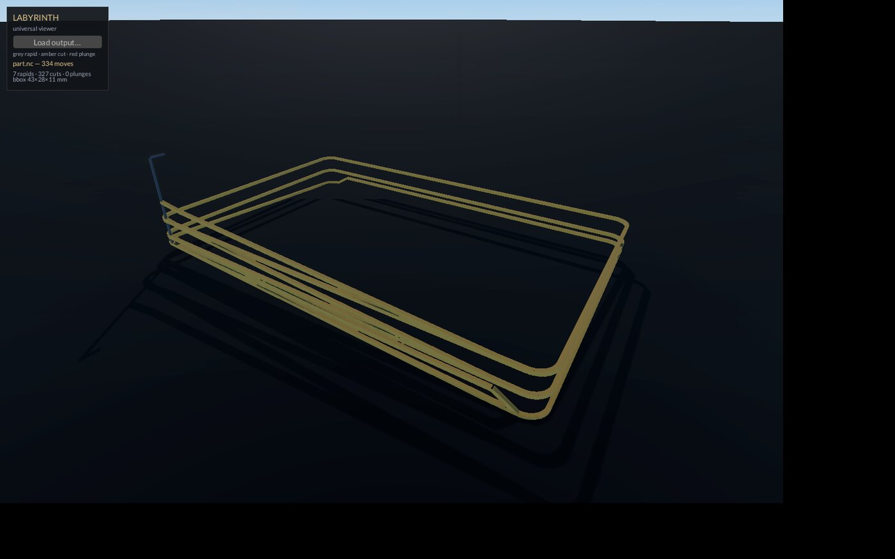

LABYRINTH
The viewer. Walk the maze before the machine does.

Labyrinth — Operator Manual
3D toolpath and slice-file viewer of the Leviathan Design Suite. Sovereign, local-first, Rust + fyrox. PolyForm Small Business license. Renamed from Daedalus by operator ruling 2026-08-15.
Quickstart
cd ~/XOS/Labyrinth
cargo build --release # target/release/ still holds the old daedalus binary — rebuild once
target/release/labyrinth path/to/job.nc
target/release/labyrinth path/to/print.ctbOne CLI argument: the file. No argument → empty scene; hit
Load output… (top-left panel) for a zenity picker
filtered to *.nc *.gcode *.ngc *.tap *.ctb. Anything not
ending .ctb is parsed as G-code.
Camera (Chimaera orbit): right-drag orbits, wheel zooms. Close the window to quit.
Colors, G-code view:
| color | meaning |
|---|---|
| grey (thin) | rapid — G0, no cut |
| amber | cut — G1/G2/G3 |
| red (thick) | plunge — a G1 that only descends in Z, the router's danger move |
The panel shows filename, move count, rapid/cut/plunge tallies, and
the bounding box in mm. Everything also echoes to stdout as
LABYRINTH … lines.
What it is
Walk the maze before the machine does. Labyrinth reads suite output — the G-code a post produced, the .ctb a slicer wrote — and draws it in 3D so you can eyeball the path before metal or resin is on the line. Moves are drawn as square tubes, not lines, so the path reads from any camera angle. It is a viewer only: it never edits, never sends, never talks to a controller.
Why the name
The Labyrinth was Daedalus's masterwork, and it outlived its maker. A toolpath IS a labyrinth: one continuous path threading a bounded space, and getting it wrong costs you. This viewer walks the maze first. The tool was called Daedalus until the operator renamed it 2026-08-15 — same code, truer name.
Features
- G-code parse (
src/parse.rs, pure and headless, 3 tests):- Words: X/Y/Z coords, G modal group 0–3, I/J arc centers. Modal position and modal G carry line to line. Absolute (G90) assumed — that's what the suite emits.
- Arcs: I/J-center G2/G3 yes — interpolated to ≤0.3 mm chords in the XY plane at current Z. R-form arcs no — they draw as a straight cut.
- Plunge detection: a G1 with no XY motion and descending Z is flagged red.
- .ctb decode (Jove's unencrypted v4/v5 shape): magic check, header stats (layers, layer height, total height, exposure, resolution) from fixed offsets, plus the embedded RGB15-RLE large preview rendered top-right.
- 3D render: rapids/cuts/plunges as three tube meshes, auto-centered and auto-framed; tube radius scales with job extent. Dark floor slab, one directional light.
Using it
- Point it at Hephaestus or Iris
.ncoutput, orbit, and check three things: plunges land where you meant them, rapids clear the stock, and no arc collapsed into a straight line (that's an R-form arc — see Known limits). - For a
.ctb, you get the header numbers and the preview thumbnail — enough to confirm you grabbed the right file, not enough to verify layers. - Loading a second file (button or picker) clears the old view first.
- The parser tests run headless:
cargo test 2>&1 | tail -3.
How it connects
- Hephaestus — CAM
.ncprograms: the main diet. - Iris — laser/plasma G-code also loads here in 3D; the flat top-down cut view (the true "Nazca" picture) lives in Iris's bed, not here.
- Jove —
.ctbfiles;parse.rsdecodes the exact inverse of Jove's preview encoder. - Tiamat launcher probes and launches Labyrinth like the rest of the suite. Window title: "Labyrinth — Leviathan Design Suite".
Known limits
A viewer that misdecodes is worse than no viewer — you'd trust a wrong picture. These are real, open, confirmed in the current code:
- G92/G28/G10 are not understood. They don't update
modal_g, so their coordinate words are decoded as motion under whatever G0–G3 was last active. AG92 X0 Y0will draw a phantom move. Programs using work-offset or homing lines will backplot wrong. - Parenthetical comments are scanned as moves. Only
;comments are stripped. A(TOOL CHANGE X5)comment parses its X5 as a real coordinate. Strip paren comments from files before trusting the plot. - Encrypted v5 .ctb is accepted but decoded from the wrong offsets. The encrypted magic passes the check and header stats are read from the unencrypted layout — the numbers shown are garbage presented as real. The preview is skipped, but don't trust any stat from an encrypted file.
- R-form arcs draw straight (by design for now — queued below).
- No G91 (relative) support; incremental programs plot wrong silently.
Queued
- .ctb layer RLE scrubbing — decode the layer masks for a slider through the stack (header + preview only today).
- R-form arcs — expand G2/G3 R… properly instead of drawing straight.
- Move-order playback — a slider stepping through the path in time.
- Rapid/cut/plunge visibility toggles — declutter dense jobs.